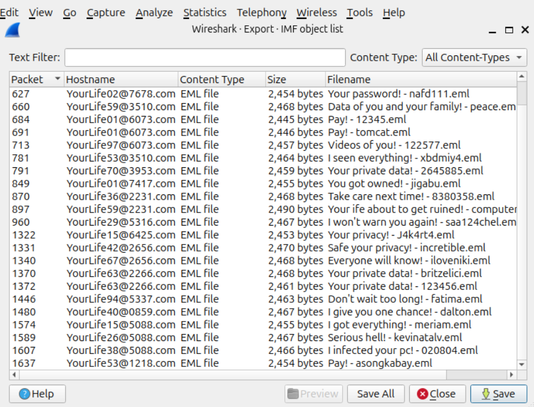
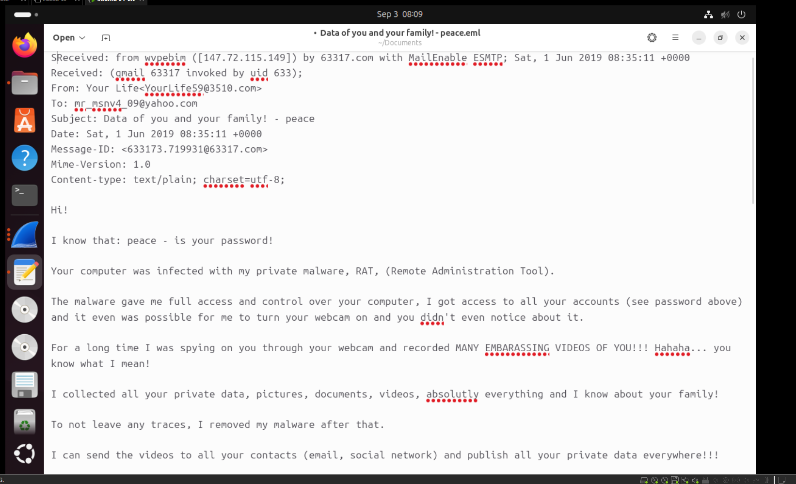
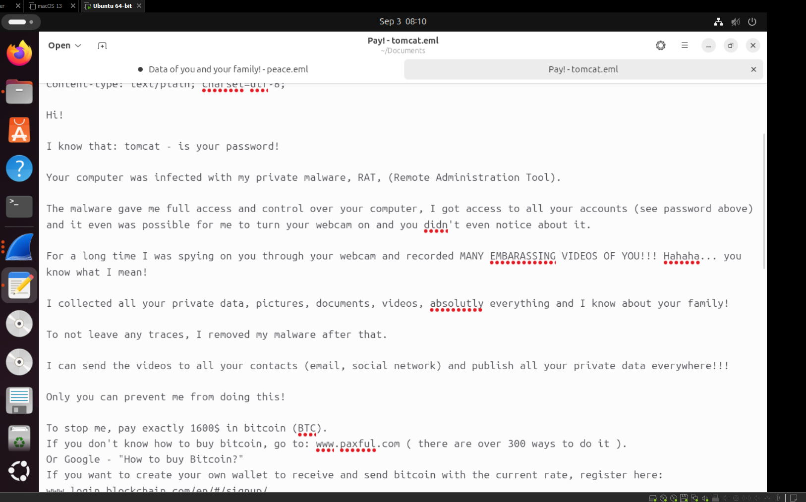
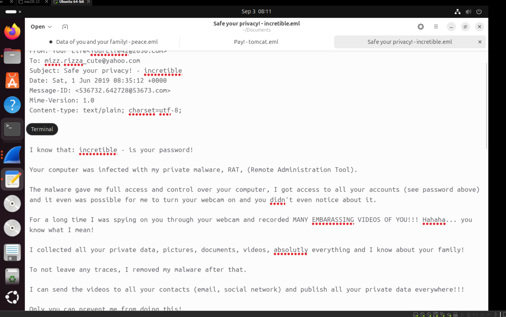

Network forensics project simulating a Business Email Compromise (BEC) scenario:
a malicious actor sent phishing emails attempting to trick employees into
fraudulent payments. The goal was to inspect .pcap captures in
Wireshark, isolate the malicious traffic from legitimate mail, and trace the
phishing campaign back to its source.
Objective
- Inspect
.pcapfiles and extract raw email content from SMTP traffic - Distinguish legitimate emails from fraudulent ones across multiple captures
- Identify the malicious actor's source IP
- Understand why SMTP header metadata, not just email body content, is the actual forensic anchor for tracing a phishing campaign's origin
Findings
Malicious actor's IP address: 10.6.1.104
Phishing subject lines identified, all from C.pcap:
- "Read carefully! - dayrit"
- "Pay! - 12345"
- "Don't wait too long! - fatima"
Methodology
- Applied the
smtpdisplay filter across all four provided.pcapfiles to surface mail traffic - Triaged each capture for suspicious language, payment demands, extortion phrasing, and ransomware indicators, and identified
C.pcapas the capture containing malicious content - Used Follow → TCP Stream on flagged packets to read full email exchanges in sequence
- Traced the origin of the malicious mail to
10.6.1.104sending to the mail server - Narrowed the view with
ip.addr == 10.6.1.104to isolate every packet tied to that host - Confirmed the pattern repeated across multiple emails from the same IP, all following a RAT (Remote Administration Tool) extortion script demanding payment
10.6.1.104 is a private (RFC 1918) address. Seeing a private IP as the
apparent source of external phishing traffic is a notable detail, it suggests
either an internal host was compromised and used to relay the phishing emails,
or the capture reflects internal network traffic or IP spoofing rather than a
direct external actor.
Stretch goal, extracted phishing emails
Used File → Export Objects → IMF in Wireshark to pull every email object out of
C.pcap. The exported list below shows the recurring extortion style
subject line pattern across dozens of messages, "Pay!", "Your privacy!", "I won't
warn you again!", all from different spoofed senders.

Three of those objects were exported and opened as .eml files in a
mail client to inspect their full content.

The first opened with a claimed password and a RAT (Remote Administration Tool) compromise, a common BEC and sextortion scare tactic.

The second used the same template, this time including a specific Bitcoin payment demand and instructions for purchasing BTC.

A third variant, sent to a different recipient, used the identical template, confirming this was a mass, scripted phishing campaign rather than a targeted one off.
Tools used
- Wireshark, packet capture inspection, SMTP filtering, TCP Stream follow, IMF object export
- Display filters:
smtp,ip.addr == 10.6.1.104
Key takeaway
BEC phishing works because the emails are designed to look legitimate, the real signal isn't in the email body, it's in the metadata: sending IP, SMTP headers, and routing path. Packet level inspection exposes exactly what an email client normally hides from the end user, which is why raw SMTP traffic analysis is a foundational skill for tracing phishing infrastructure back to its source.